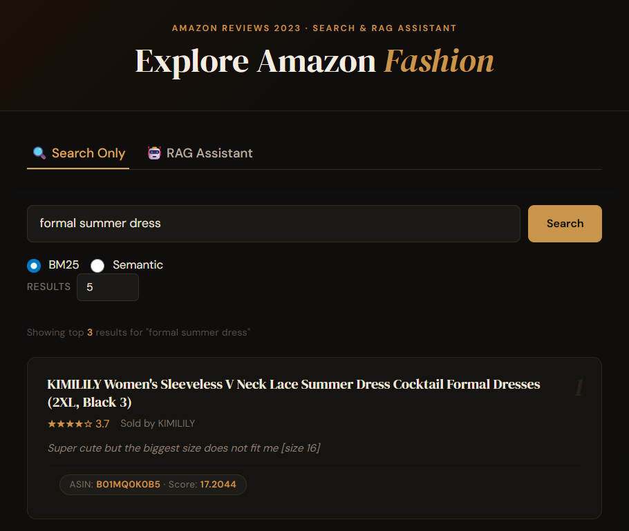
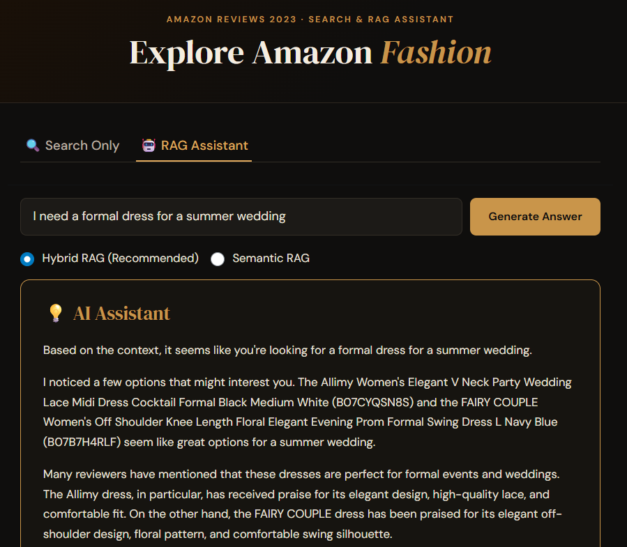

Smart Amazon Product Query
Overview
An end-to-end Retrieval-Augmented Generation (RAG) system built over the Amazon Reviews 2023 dataset (Amazon Fashion category). Given a natural language query, the system retrieves the most relevant products and generates a grounded answer using an LLM. Built with a teammate for DSCI 575.
The app supports three modes: BM25 keyword retrieval, semantic search via sentence embeddings + FAISS, and hybrid RAG which combines both and feeds the results to an LLM.
RAG Pipeline
User Query
│
├─────────────────────┐
▼ ▼
┌──────────┐ ┌──────────────┐
│ BM25 │ │ Semantic │
│ Search │ │ Search │
│(rank_bm25│ │(all-MiniLM + │
│ ) │ │ FAISS) │
└────┬─────┘ └──────┬───────┘
│ │
│ Min-Max normalize │
│ scores separately │
└──────────┬──────────┘
▼
Weighted Score Merge
(default: 60% semantic,
40% BM25)
Merged & ranked by ASIN
│
│ Top-k=15 Documents
▼
┌────────────────────┐
│ Context Builder │
│ ASIN · title · │
│ rating · price · │
│ store · review │
└──────────┬─────────┘
│
▼
┌────────────────────┐
│ LLM Generator │
│ llama-3.1-8b- │
│ instant (Groq) │
└──────────┬─────────┘
│
▼
Generated Answer
+ Retrieved DocumentsData Pipeline
Rather than taking the first N rows, the corpus is built with a stratified window-function sample in DuckDB across three axes — product rating bucket, review text length, and verified purchase status — giving up to 36 strata with 500 reviews each, capped at one review per product per stratum.
# src/data_processing.py — stratify_corpus (simplified)
con = duckdb.connect()
con.execute(f"""
COPY(
WITH one_per_product AS (
SELECT *,
ROW_NUMBER() OVER (
PARTITION BY rating_bucket, len_tier, verified_purchase, parent_asin
ORDER BY helpful_vote DESC, random()
) AS product_rank
FROM labelled
),
ranked AS (
SELECT *,
ROW_NUMBER() OVER (
PARTITION BY rating_bucket, len_tier, verified_purchase
ORDER BY helpful_vote DESC, random()
) AS stratum_rank
FROM one_per_product
WHERE product_rank = 1
)
SELECT * FROM ranked
WHERE stratum_rank <= 500
""")
con.close()Fields for BM25 and semantic retrieval are built separately with different field weighting strategies. BM25 up-weights structured metadata heavily; semantic encoding uses a lighter boost since the embedding model handles meaning more holistically:
def build_bm25_text(corpus):
# product_title × 3, review_title × 2, then store + review body
return (
corpus["product_title"].fillna("").astype(str) * 3 + " " +
corpus["review_title"].fillna("").astype(str) * 2 + " " +
corpus["store"].fillna("").astype(str) + " " +
corpus["review_body"].fillna("").astype(str)
)
def build_semantic_text(corpus):
# product_title × 2 + review body
return (
corpus["product_title"].fillna("").astype(str) * 2 + " " +
corpus["review_body"].fillna("").astype(str)
)Retrieval
BM25 tokenizes with lowercase, punctuation removal, and stopword filtering. Vectorized preprocessing over the full corpus runs 3–5× faster than row-wise apply.
Semantic search encodes with all-MiniLM-L6-v2 (L2-normalized for cosine similarity via IndexFlatIP) and retrieves with MMR (fetch_k=50, return k=15) to balance relevance and diversity, then aggregates to the product level by averaging the top-3 chunk scores per ASIN.
Hybrid normalizes both score sets to [0, 1] independently, then merges:
hybrid_score = (0.6 × semantic_score) + (0.4 × bm25_score)RAG Chain
Both the semantic and hybrid chains share the same context builder, prompt template, and LLM. The context builder formats each retrieved document into a structured block:
def build_context(docs: list) -> str:
return "\n\n".join(
f"Product ASIN: {doc.metadata.get('parent_asin', 'N/A')}\n"
f"Title: {doc.metadata.get('product_title', 'N/A')}\n"
f"Rating: {doc.metadata.get('rating', 'N/A')}/5\n"
f"Average Rating: {doc.metadata.get('average_rating', 'N/A')}/5\n"
f"Price: {doc.metadata.get('price', 'N/A')}\n"
f"Store: {doc.metadata.get('store', 'N/A')}\n"
f"Review: {doc.page_content}\n"
for doc in docs
)The chain wires retriever → context builder → prompt → LLM using LangChain LCEL:
chain = (
{
"context": hybrid_retriever | build_context,
"question": RunnablePassthrough()
}
| prompt_template
| llm
| StrOutputParser()
)The system prompt instructs the model to answer using only the provided review context, cite ASINs in recommendations, highlight relevant product details like fit and durability, compare products when multiple are relevant, and explicitly acknowledge when context is insufficient rather than hallucinating.
Example
Search mode — query: “formal summer dress”
KIMILILY Women’s Sleeveless V Neck Lace Summer Dress ★★★★☆ 3.7 “Super cute but the biggest size does not fit me” · Score: 17.2

RAG mode — query: “I need a formal dress for a summer wedding”

Based on the context, the Allimy Women’s Elegant V Neck Party Wedding Lace Midi Dress (B07CYQSN8S) and the FAIRY COUPLE Women’s Off Shoulder Floral Evening Prom Dress (B07B7H4RLF) seem like great options…
Evaluation
Retrieval is evaluated with Precision@k, Recall@k, and MRR using runtime-derived ground truth — for each test query, relevant ASINs are identified by regex-matching product_title in the cleaned corpus, so the ground truth set regenerates automatically when the corpus is rebuilt.
An A/B experiment compared the shipped model (llama-3.1-8b-instant) against a larger challenger (llama-3.3-70b-versatile) with identical retrieved context and prompt, so any output differences are attributable solely to the model.
What I Learned
- Stratified sampling over a 2.5M review corpus made a meaningful difference to retrieval quality compared to a naive slice — the naive approach over-represented popular products and short reviews
- MMR at retrieval time noticeably reduced result redundancy for broad queries where many reviews describe the same product
- Holding context and prompt constant in the A/B experiment was the right design — it surfaced real model capability differences rather than confounding from retrieval variance